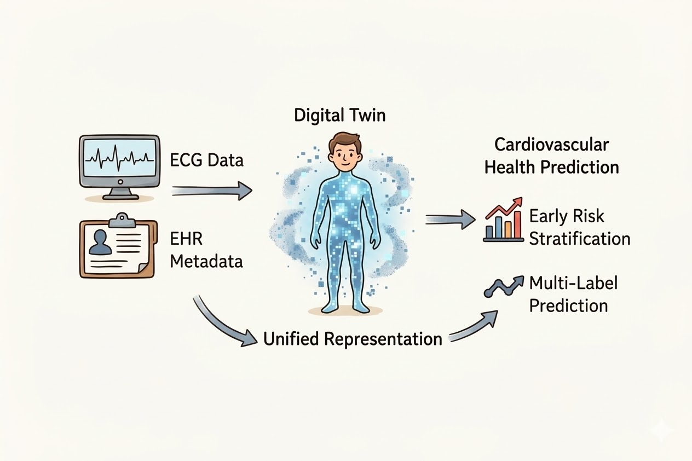
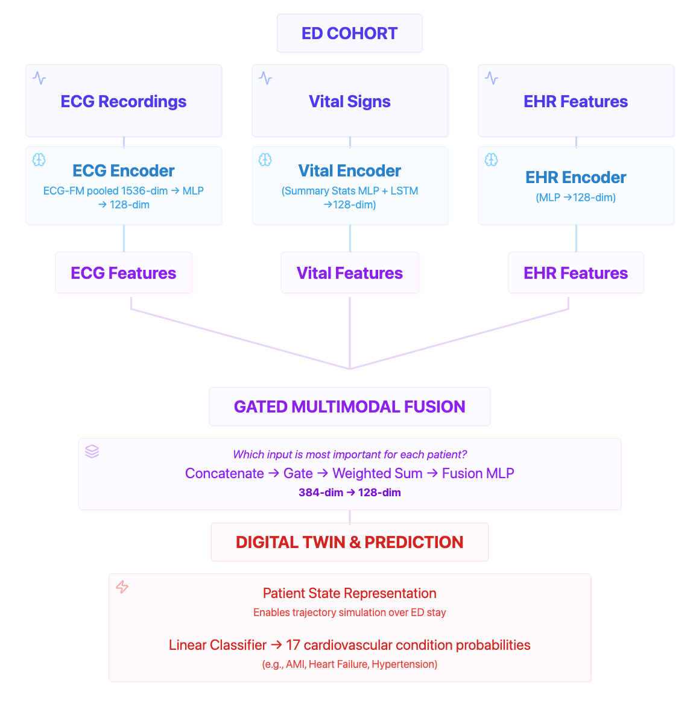

The Problem
Heart disease and stroke claim more lives than all forms of cancer combined. Despite advances in treatment, timely detection and personalized risk stratification remain critical gaps. Clinical data is fragmented across hospitals, ED visits, and specialized tests—making it difficult to build AI that sees the full patient picture.
Our Solution
CardioTwin is a multimodal deep learning framework that unifies 12-lead ECG waveforms, longitudinal vital sign trajectories, and structured EHR features into a single patient representation. Rather than analyzing clinical signals in isolation, CardioTwin fuses all three modalities through a learned gating mechanism—producing a continuously evolving digital twin of each patient's cardiovascular state during their emergency department encounter.
The system predicts 17 cardiovascular ICD-10 diagnosis categories and is designed to support proactive risk stratification at triage, before definitive diagnoses are available. By modeling the patient as a unified, evolving entity rather than a series of disconnected data points, CardioTwin moves cardiac care toward a continuous, personalized paradigm.

ECG signals and EHR metadata are fused into a unified patient representation, enabling early risk stratification and multi-label cardiovascular prediction.
How It Works
Our model integrates multiple clinical data streams into a unified patient representation to capture a comprehensive view of cardiovascular health. We combine baseline demographic and admission-level features such as age, ethnicity, gender, and race with structured clinical measurements including heart rate, blood pressure, oxygen saturation, and temperature. In addition, we incorporate electrocardiogram data by leveraging both machine-generated measurements such as PR interval, QRS duration, and QTc, along with raw waveform signals to provide high-resolution insight into cardiac electrophysiology. These heterogeneous data sources are standardized through temporal alignment, normalization, missing value handling, and feature encoding to ensure consistency across modalities. Static features are encoded once per admission, while time-series signals are aggregated or modeled using sequential architectures to capture dynamic physiological trends. The result is a multimodal patient-level representation that reflects both baseline risk and real-time cardiac state, enabling robust cardiovascular risk modeling and improved predictive performance.
Data Sources
| Dataset | Description |
|---|---|
| MIMIC-IV v3.1 | Hospital & ICU: admissions, diagnoses, lab events, vitals |
| MIMIC-IV-ED v2.2 | Emergency department visits, diagnoses, vitals |
| MIMIC-IV-ECG v1.0 | Electrocardiogram recordings and measurements |
Model Architecture
CardioTwin integrates three dedicated encoders that each project into a shared 128-dimensional latent space, then combines them through an adaptive gated fusion mechanism to produce a patient-specific cardiovascular representation.

CardioTwin architecture. Three modality encoders project into a shared 128-dim space. A learned gate dynamically weights each modality per patient before a fusion MLP produces the final patient state representation.
ECG Encoder
Input: Up to two ECG-FM embeddings (1,536-dim each) extracted from 12-lead waveforms via a transformer foundation model pretrained on millions of ECGs.
Architecture: Attention-pooled across ECGs → MLP (1536→256→128)
Output: 128-dim ECG representation
Vital Sign Encoder
Input: Summary statistics (30 features: mean/std/min/max × 6 vitals + 7 nearest-to-ECG) and raw time series (up to 12 timesteps × 6 channels).
Architecture: Parallel MLP + single-layer LSTM (64 hidden units) → concatenated → Linear→128
Output: 128-dim vital representation
EHR Encoder
Input: Structured EHR features including demographics, ECG interval measurements (PR, QRS, QT), and encounter metadata (~47 features).
Architecture: MLP (dehr→64→128) with BatchNorm, GELU, Dropout
Output: 128-dim EHR representation
Gated Multimodal Fusion
The three 128-dim modality encodings are concatenated into a 384-dim vector and passed through a two-layer gate network that produces three softmax-normalized weights—one per modality. The fused state is the weighted sum of encodings, then projected through a fusion MLP to a 64-dim patient representation. A linear head produces 17 sigmoid-activated output logits for multi-label diagnosis prediction.
This adaptive gating allows the model to dynamically rely on the most informative modality per patient. For example, ECG embeddings dominate for arrhythmia detection (e.g., atrial fibrillation), while vital signs drive predictions for hemodynamic conditions like hypertensive crisis.
Results
More later...
About the Team
Rahman Tauhidur
References
- Global Burden of Disease Collaborative Network. Global Burden of Disease Study 2023 (GBD 2023) Results. Seattle, United States: Institute for Health Metrics and Evaluation (IHME), 2024. Available from https://vizhub.healthdata.org/gbd-results/
- Centers for Disease Control and Prevention. Heart Disease Facts & Statistics. Available from https://www.cdc.gov/heart-disease/data-research/facts-stats/index.html